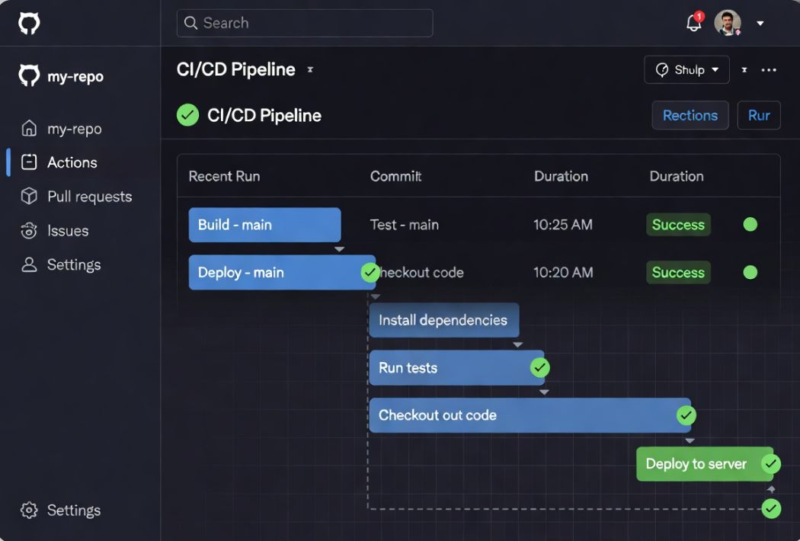

Mairam Baidy Sow - Groupe 1 AWS re/Start

Mise en place d’un pipeline d’intégration et déploiement continu (CI/CD) automatisé avec GitHub Actions.
Automatiser entièrement le cycle de vie d’une application : tests, build et déploiement sur une instance AWS EC2 à chaque push sur la branche main.
Bonne pratique DevOps, automatisation complète, réduction des erreurs humaines et gain de temps énorme sur le déploiement.